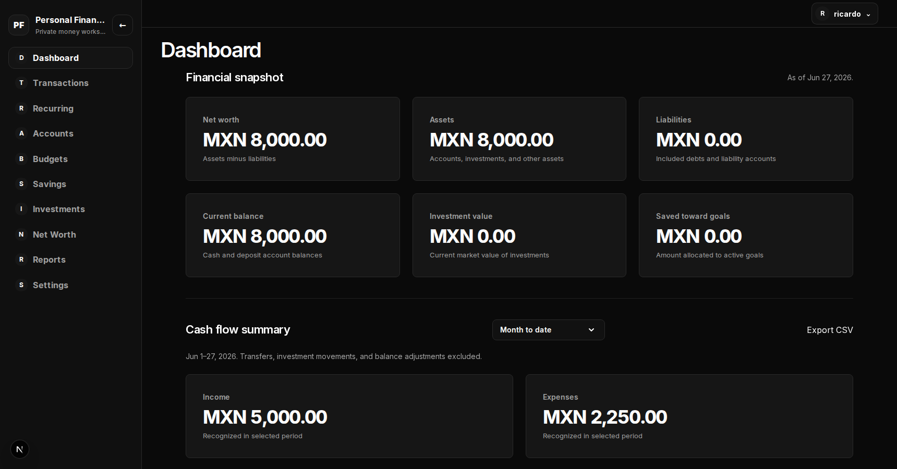

01 / Flagship case study
Personal Finance
A private workspace that turns scattered financial activity into a clear view of cash flow, plans, and net worth.

The problem
Financial decisions are harder when each part of the picture lives somewhere else.
Income, expenses, budgets, savings, investments, and liabilities all affect one another, but tracking them separately makes it difficult to understand current position and period activity without rebuilding the same picture by hand.
The delivered solution
One authenticated workspace for recording activity, planning ahead, and reading the whole financial position.
As the repository’s sole contributor, I defined the product language and built the application across accounts, transactions and transfers, budgets, savings goals, investments, net worth, recurring activity, reports, CSV import and export, and user preferences. The dashboard separates the latest financial snapshot from activity in a selected period, so a date filter does not quietly change values that represent the present.
Read the engineering decisionsImportant technical decisions
Correct financial boundaries before convenient abstractions.
-
01
Keep authorization next to the data
Authenticated Supabase clients preserve the user identity for PostgreSQL Row-Level Security. A privileged server client is narrowly limited to persistent rate limiting rather than user-owned finance data.
-
02
Store and calculate money exactly
PostgreSQL numeric values cross the persistence boundary as decimal text, while fixed-point application calculations avoid JavaScript floating-point arithmetic until an explicit presentation boundary.
-
03
Own the interaction boundary
Semantic HTML, native forms, Server Actions, and an application-owned CSV boundary provide accessible controls and authoritative server validation without adding component and form libraries that did not solve a concrete gap.
-
04
Apply filters only where they are truthful
Report filters affect only data with the matching dimension. For example, a category cannot imply a change to net worth, and a date range cannot pretend current investment valuations are historical snapshots.
Outcome and lesson
A tested foundation whose product rules can be checked, not just described.
The result is a private application with automated coverage at unit, browser, database, authentication, storage, and cross-user authorization boundaries. The lasting lesson was that finance software becomes easier to extend when terms such as current balance, net cash flow, transfer, and reporting currency have explicit definitions shared by the interface, calculations, and persistence model.